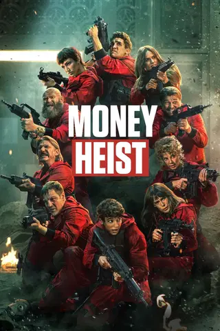

 Money Heist To carry out the biggest heist in history, a mysterious man called The Professor recruits a band of eight robbers who have a single characteristic: none of them has anything to lose. Five months of seclusion - memorizing every step, every detail, every probability - culminate in eleven days locked up in the National Coinage and Stamp Factory of Spain, surrounded by police forces and with dozens of hostages in their power, to find out whether their suicide wager will lead to everything or nothing. "Money Heist" — drama and crime show produced in Spain and released in 2017. It has a very high rating on IMDb: 8.2 stars out of 10. more
The 100 100 years in the future, when the Earth has been abandoned due to radioactivity, the last surviving humans live on an ark orbiting the planet — but the ark won't last forever. So the repressive regime picks 100 expendable juvenile delinquents to send down to Earth to see if the planet is still habitable. "The 100" — sci-fi, drama and adventure show produced in USA and released in 2014. It has a great rating on IMDb: 7.6 stars out of 10. more
Breaking Bad Walter White, a New Mexico chemistry teacher, is diagnosed with Stage III cancer and given a prognosis of only two years left to live. He becomes filled with a sense of fearlessness and an unrelenting desire to secure his family's financial future at any cost as he enters the dangerous world of drugs and crime. "Breaking Bad" — crime and drama show produced in USA and released in 2008. It has a fantastic rating on IMDb: 9.5 stars out of 10.more
The Terminal List A former Navy SEAL officer investigates why his entire platoon was ambushed during a high-stakes covert mission. The Terminal List" — drama, action and thriller show produced in USA and released in 2022. It has a great rating on IMDb: 7.9 stars out of 10.more
The Lord of the Rings: The Rings of Power This epic drama is set thousands of years before the events of J.R.R. Tolkiens The Hobbit and The Lord of the Rings, and will take viewers back to an era in which great powers were forged, kingdoms rose to glory and fell to ruin, unlikely heroes were tested, hope hung by the finest of threads, and the greatest villain that ever flowed from Tolkiens pen threatened to cover all the world in darkness. "The Lord of the Rings: The Rings of Power" — adventure, fantasy and action show produced in USA and released in 2022. It has a good rating on IMDb: 6.9 stars out of 10. more
The Witcher Geralt of Rivia, a mutated monster-hunter for hire, journeys toward his destiny in a turbulent world where people often prove more wicked than beasts. "The Witcher" — mystery, fantasy and drama show produced in USA, Poland and Hungary and released in 2019. It has a very high rating on IMDb: 8 stars out of 10. more
Vikings: Valhalla Embark on an epic journey with the fearless Vikings, including Leif Eriksson, Freydis Eriksdotter, Harald Hardrada, and the mighty King William the Conqueror. Witness their legendary feats as they navigate through a treacherous world, fighting for their very existence. Join them as they leave their mark on history and create a legacy that will never be forgotten. "Vikings: Valhalla" — action, drama and adventure show produced in USA and released in 2022. It has a great rating on IMDb: 7.3 stars out of 10. more
Squid Game Hundreds of cash-strapped players accept a strange invitation to compete in children's games. Inside, a tempting prize awaits with deadly high stakes.s survival game that has a whopping 40-million-dollar prize at stake. "Squid Game" — drama, action and adventure show produced in South Korea and released in 2021. It has a very high rating on IMDb: 8 stars out of 10. more
The Glory After a childhood marked by pain and violence, a woman puts a carefully planned revenge scheme in motion. "The Glory" — drama show produced in South Korea and released in 2022. It has a very high rating on IMDb: 8.1 stars out of 10. more
Queen of Tears The queen of department stores and the price of supermarkets weather a marital crisis—until love miraculously begins to bloom again. "Queen of Tears" — drama and comedy show produced in South Korea and released in 2024. It has a very high rating on IMDb: 8.2 stars out of 10. more
Alchemy of Souls In this captivating TV series, a skilled sorceress trapped in the body of a blind woman joins forces with a man from a wealthy and respected family in his quest to alter his fate. With thrilling action and mesmerizing magic, this show will leave you on the edge of your seat! "Alchemy of Souls" — sci-fi, drama and adventure show produced in South Korea and released in 2022. It has a very high rating on IMDb: 8.7 stars out of 10. more